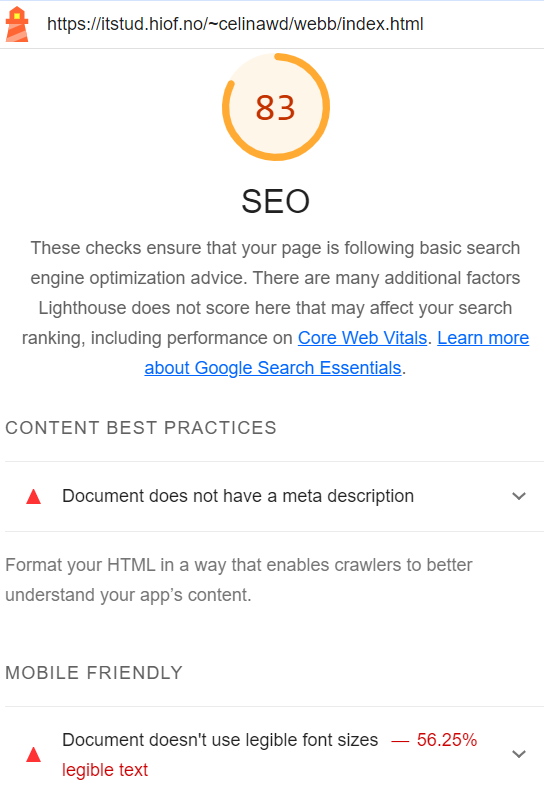

Oblig 4
Analyse av oblig 3
Del 2

| Lighthouse | Webaim | Chat GPT | Sammenligning |
|---|---|---|---|
Her er SEO scoren av forsiden på desktop. Eneste klagen den har er at jeg ikke har brukt "meta" beskrivelse. |
Jeg fikk klage om at jeg ikke hadde brukt noe heading struktur. Jeg fikk klager på at teskten på toppen var for liten, denne feilen går igjen på alle sidene. "Redundant link" Alle linkene går til sammen nettside, Webaim er ikke glad i dette fordi det er ekstra arbeid for brukerne. I realitet skal alle knappene ha forskjellige linker, men dette vet ikke webaim, så jeg velger litt å se bort i fra denne. |
SEOLegg til en metabeskrivelse (`meta name="description" content="Beskrivelse av nettstedet"`) for å gi en kort beskrivelse av nettstedet. Dette vil bli vist i søkeresultatene og kan påvirke klikkfrekvensen. Feil i link-elementet: I link-elementet er type-attributtet satt til Text/Css, men det skal være text/css. Sørg for at hver side har en unik og beskrivende tittel "title". Tittelen bør reflektere innholdet på den spesifikke siden. Bilder mangler beskrivende alt-attributt: Du har brukt alt-attributtet for bildene, men det kan være lurt å gi en mer beskrivende tekst for bedre forståelse av bildene for søkemotorer. UUManglende tekstalternativer for ikoner: Selv om du bruker ikoner, mangler det beskrivende tekstalternativer (for eksempel aria-label) som er viktige for skjermlesere. Fargekontrast: Sørg for at tekst og bakgrunn har tilstrekkelig kontrast for bedre lesbarhet, spesielt for personer med nedsatt syn. Navigasjonsrekkefølge: Sjekk at navigasjonsrekkefølgen er logisk for tastaturbrukere og skjermlesere. Bruk av semantiske HTML-elementer som "nav", "header", og "footer" kan hjelpe med dette. Skjult JavaScript: Selv om du har inkludert JavaScript, bør det også være funksjonelt uten JavaScript for brukere som har deaktivert det. Kodeoptimalisering: Fjern unødvendig kode og kommentarer for å redusere lastingstid og forbedre ytelsen. |
SEOAlle nettsidene klaget på meta beskrivelse. Chat GPT er eneste som har noe annet å si på SEO bortsett fra meta beskrivelse. UUBåde Chat GPT og Webiam klaget på mangel av "header" struktur. Chat GPT klager på bildenes "alt-attributt" Webiam er eneste programmet som klager på at jeg har flere av samme linker. Chat GPT har mange klager og kommentarer som de andre programmene ikke har nevnt noe på. |
Her er SEO scoren av forsiden på mobil. Her har jeg fått klager på at jeg ikke har brukt "meta" beskrivelse, og at skrift størrelsen ikke er bra nok.  |
|||
Her er SEO scoren av produktsiden på desktop. Eneste klagen den har er at jeg ikke har brukt "meta" beskrivelse.  |
SEODu har inkludert en tittel "title" som er bra for SEO. Den bør være beskrivende og unik for hver side. Du mangler en metabeskrivelse. En metabeskrivelse gir en kort oversikt over innholdet på siden og kan være nyttig for søkemotorer og brukere. Du har inkludert alternative tekster for bildene, noe som er bra for SEO. Husk å gi beskrivende alternative tekster for å forbedre forståelsen av bildene for søkemotorer. UUTastaturnavigasjon: Sjekk om nettstedet er navigerbart og fungerer korrekt ved bruk av tastaturet alene, uten avhengighet av musen. Alternativ tekst for ikoner: Inkluder alternative tekster (for eksempel aria-label) for å gi meningsfulle beskrivelser av ikonfunksjonene, spesielt viktig for skjermleserbrukere. Du har brukt noen semantiske elementer som "header", "section", "main", og "footer", som er bra. Skjult tekst: Unngå å skjule tekst eller innhold som kun vises når JavaScript er aktivert, da dette kan være vanskelig å oppdage for skjermlesere og søkemotorer. Kodeoptimalisering: Fjern unødvendig kode og kommentarer for å forbedre lastingstiden og nettstedets ytelse. Kontaktinformasjon: Du har inkludert kontaktinformasjon i foteren, noe som er viktig for brukere som trenger å komme i kontakt med nettstedet. | SEOAlle nettsidene klaget på meta beskrivelse. ChatGPT gir skryt på alternativ tekst til bildene, men nevner at teksten må være bra og beskrivende. UUChat GPT er fornøyd med bruk av semantiske elementer. Chat GPT ber meg om å sjekke om koden er optimalisert og om nettsiden er optimalisert til tastaturnavigasjon. |
|
Her er SEO scoren av produktsiden på mobil. Eneste klagen den har er at jeg ikke har brukt "meta" beskrivelse.  |
|||
Får gjentagende feil fra topp teksten og nav. Webaim klager på at jeg har brukt for liten tekst på pris og på produkt navn. Siden jeg har 8 produkter, får jeg feilen 8x2 ganger. I tillegg till at alle 8 produktene har en link som leder til samme nettside. I tillegg til at teksten på pris ikke hadde bra nok kontrast fra bakgrunnsfargen. |
SEODu har inkludert riktig charset og viewport. Tittelen på siden "title" er også angitt, noe som er bra for SEO. Feil i link-elementet: Igjen er `type`-attributtet satt til `Text/Css`. Det skal være `text/css` Du har inkludert alternative tekster for bildene, noe som er viktig for SEO. Dette gir beskrivelser av bildene til søkemotorer UUSørg for at tekst og bakgrunn har god kontrast for å sikre lesbarhet, spesielt for personer med nedsatt syn Sørg for at nettstedet er navigerbart og funksjonelt ved bruk av tastaturet alene, uten bruk av mus. Dette er viktig for personer med motoriske utfordringer. Selv om du bruker ikoner, bør du inkludere alternative tekster (f.eks. `aria-label`) for å gi en meningsfull beskrivelse av ikonenes funksjon. Sørg for at nettstedet er funksjonelt selv om JavaScript er deaktivert, slik at brukere med JavaScript-avslått eller eldre nettlesere kan få tilgang til innholdet. |
SEOAlle nettsidene klaget på meta beskrivelse. Chat GPT gir skryt for at jeg har med alternativ tekst for bildene, men klager på at jeg ikke har det til ikoner. UUWebaim kommenterte på at teksten min noen steder var alt for liten, og at farge kontrasten på noen tekster ikke var bra nok. |
|
|
Jeg fikk klager på at jeg ikke har en meta beskrivelse, i tillegg til at fonten ikke er gyldig. |
Forbedrende tiltak
1
2